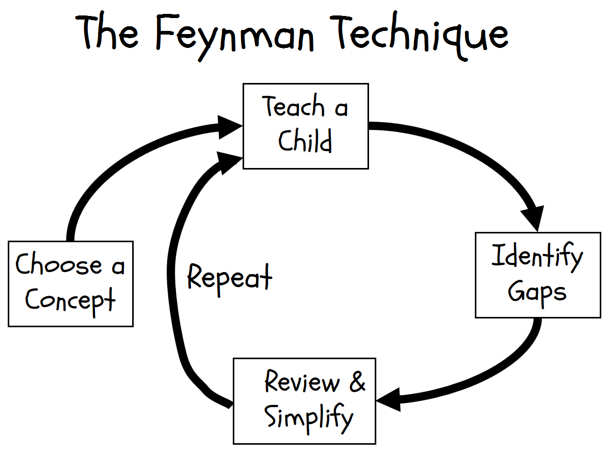

HOME BLOG EBOOKS ABOUT CONTACT SHOP
Richard Feynman was an exceptional man, his work as a physicist was extraordinary. He was awarded the Nobel prize for his work in physics in 1965. But there was something else that made him stand out from all the other physicists of his time, his "Teaching" skills. There was none better. He was an exceptional explainer, for the lack of a better word. He could convey the most complex topics in physics in the most eloquent and enthralling manner.
How was he able to do this? How could he learn different topics in such detail? Ofcourse he was no ordinary man, but there are a few tips we could take from the great man. Feyman had a system, a technique to learn stuff. In James Gleick’s biography of Feynman, he calls it the "Feynman Technique".
The Feynman technique can be summarized into 4 steps:
